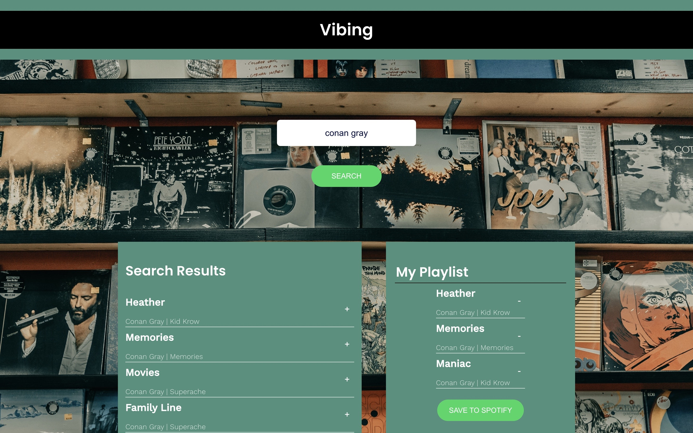

JavaScript can also handle requests and responses on a website. It's a great language to master for front-end and back-end web development.
About Me
Hi! I am Sparsh Trivedy, a second year Computer Science major at the University of British Columbia. My interests lie in Software Engineering and Web Development, Front-end Web Development in particular.
When I am not working, you can find me curled up on the couch reading a book, doing digital sketches or cafe hopping around Vancouver.
Projects
Personal Budget API
August 2022
This is a REST API that is used to keep track of an individual's personal budget. A user can add categories to/remove categories from their
budget and assign a balance amount to each category.
Any debit or credit is reflected on the remaining balance. We also have a separate table of transactions
that keeps track of any and all transactions between the categories of our budget.
We have two separate tables - one for the personal budget with its different categories, and one for the transactions between these categories with their
dates and amounts. Any change in one of these tables is reflected on the other.
The database, with these tables, is deigned using PostgreSQL and the server that handles the HTTP requests is designed using Express. The server and
database are connected using node-postgres and this API is documented using Swagger API.
Languages: Node.js, Express, SQL
Vibing
July 2022

This is a front-end application that allows a user to browse songs, add them to a playlist and save it to Spotify. this
functionality was made possible using the Spotify API.
The user can search for songs, albums or artists and the search results, fetched from Spotify, are displayed to the users in
the "Search Results" column. The users can then select the songs that they wish to add to their playlist. The users can even
choose a name for their playlist, remove songs from the playlist and save it to Spotify.
Languages: HTML, CSS, JavaScript, React.js
Note Maker
May 2022
 This is a front-end application, implemented in React.js, that sends the topic for notes as plain text prompts to OpenAI API and displays the results
in a list. The user is able to enter the topic in a form, which on submitting displays a log of results in a list, sorted from newest to oldest.
This is a front-end application, implemented in React.js, that sends the topic for notes as plain text prompts to OpenAI API and displays the results
in a list. The user is able to enter the topic in a form, which on submitting displays a log of results in a list, sorted from newest to oldest.
Languages: HTML, CSS, JavaScript, React.js
Image Detector
April 2022
 This is a front-end application that allows its users to enter an image url and detects the objects in that image. This behaviour
was implemented using the Clarifai-API, that uses machine learning to detect the objects in an image. The application displays the
5 most probable results to the user, along with the image corresponding to the url entered by the user.
This is a front-end application that allows its users to enter an image url and detects the objects in that image. This behaviour
was implemented using the Clarifai-API, that uses machine learning to detect the objects in an image. The application displays the
5 most probable results to the user, along with the image corresponding to the url entered by the user.
Languages: HTML, CSS, JavaScript, React.js
Image Partitioning Trees
March 2022
This application, implemented in C++, uses a binary tree (PTree) to represent an image. The nodes of this tree represent rectangular
regions of a PNG image.
Operations on this tree allow us to Prune the tree which results in a more pixelated image. The Prune function attempts, starting
near the top of a freshly built tree, to remove all the descendants of a node, if all of the leaf nodes below the current
node have colour within tolerance of the node's average colour. This application also allows us to flip an image both horizontally
and vertically. The effects of these operations can be observed using the render function which renders an image using the root node
of a tree as an input.
Languages: C++


Cafe Kiosk
December 2021
 This is an interactive coffee ordering application, implemented in Java, that allows a user to add/remove drinks
from the shopping cart, view order summary, generate bill and place an order.
This is an interactive coffee ordering application, implemented in Java, that allows a user to add/remove drinks
from the shopping cart, view order summary, generate bill and place an order.
This application makes use of an API that allows its users to save and load their orders. It also keeps a log each
time a drink is added or removed from the cart. The Java Swing library was used to add a Graphical User Interface
and make the application more user friendly. This application was designed with software design principles in mind
and tested using JUnit.
Languages: Java
Experience
Science Undergraduate Society (July 2022 - Current)
Academic Experience Coordinator
- Work with other coordinators to enhance the academic experience of undergraduate students in the faculty of Science.
- Responsible for organizing faculty wide surveys, tutoring and group-study sessions.
Browns Crafthouse (May 2022 - June 2022)
Prep-Cook and Dishwasher
- Worked in small teams where effective communication is essential.
- Adapted to a busy work environment where people depend on me to stick to deadlines.
- Learnt to deal with unexpected rushes/situations.
BGC Engineering (September 2022 - Apr 2023)
Web Development Co-op
...
Skills
Programming: Java, C++, C, JavaScript, SQL, Python, R
Web: HTML, CSS, React.js, Node.js, Express, PostgreSQL
Tools: GitHub, Git, Bootstrap, GDB, Valgrind, pgAdmin, Postman, Postbird
Testing: JUnit, Mocha